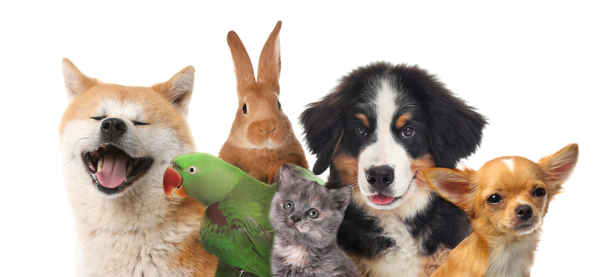

Who is FVHA?
The Fox Valley Humane Association is an animal shelter in Appleton, Wisconsin.
What is their mission?
Their mission is to remove barriers for pets and their people by providing continuous care, education, and connections to community resources. While also improving the lives of pets and their people within the community and strengthen the animal bond.
These animals include:
- Dogs
- Cats
- Rabbits
- Guinea pigs
- Birds
- Ferrets
Contact
Phone: (920)733-1717
Email: adopt@foxvalleypets.org